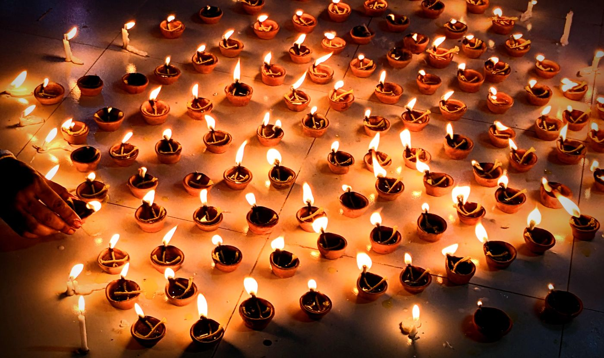

Twenty-one plates that finally match
A temple committee · Moradabad · 2024

The ask
The temple's aarti thalis had been donated over forty years — no two alike, three cracked at the rim, and bells in four different keys, so the evening aarti sounded like an argument.
What I made
21 identical 12-inch brass thalis, full piece sets, every plate weighed singly and adjusted to the same gram, the temple's name engraved in Devanagari by one hand so all twenty-one read alike. The old plates went back to the families who had donated them.
The outcome
In daily use since Janmashtami 2024. The priests now set one plate, the same way, every morning — and the bells agree with each other.
21 thalis · Brass · 12-inch plates · 1,665 g each, weighed singly · ₹5,830 per thali at the printed tables, engraving included · Delivered over six weeks
“She weighed every plate in front of the committee and wrote the weight inside the rim. In forty years nobody had done that for us.”— The temple committee secretary, on the twenty-one thalis